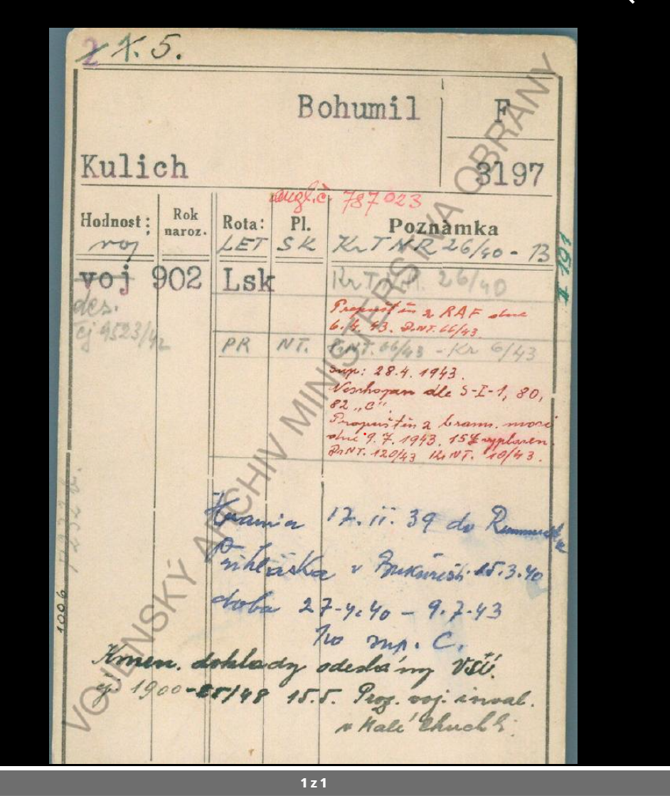
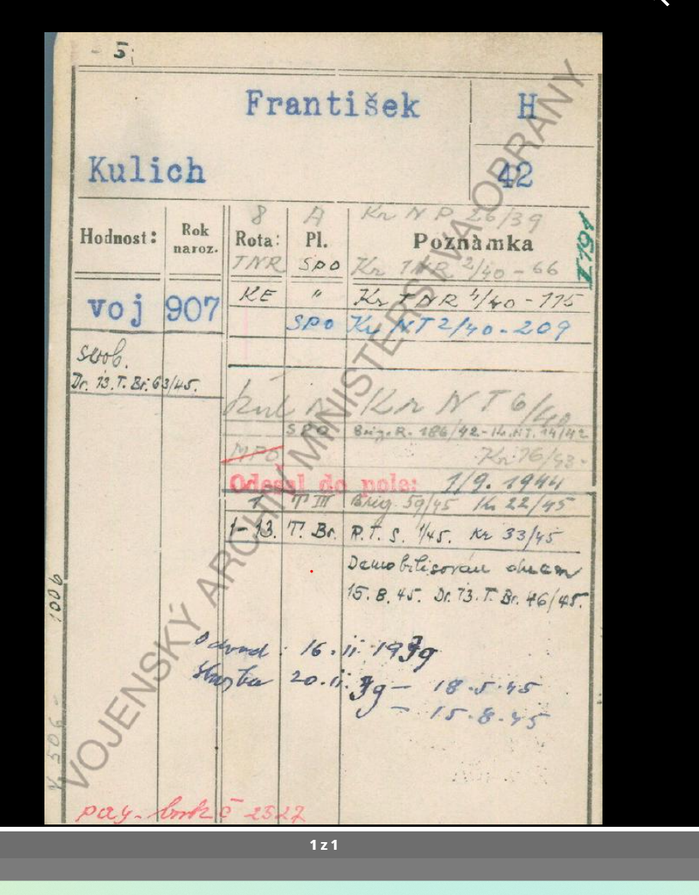
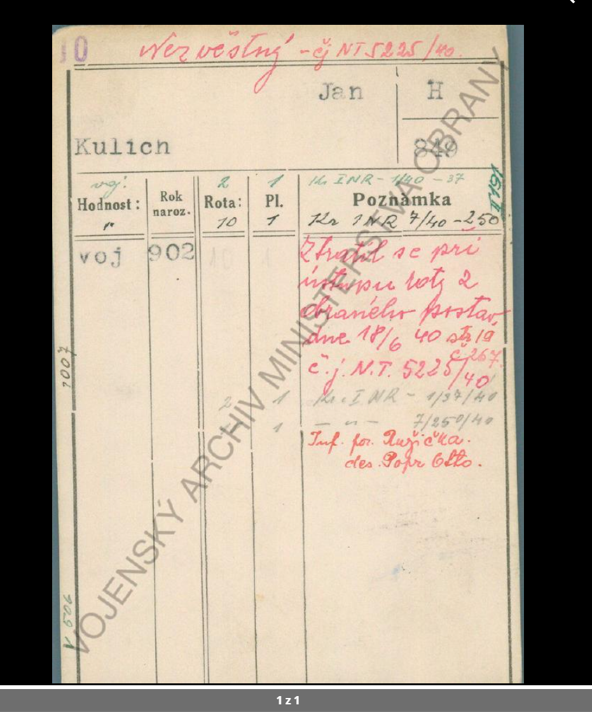
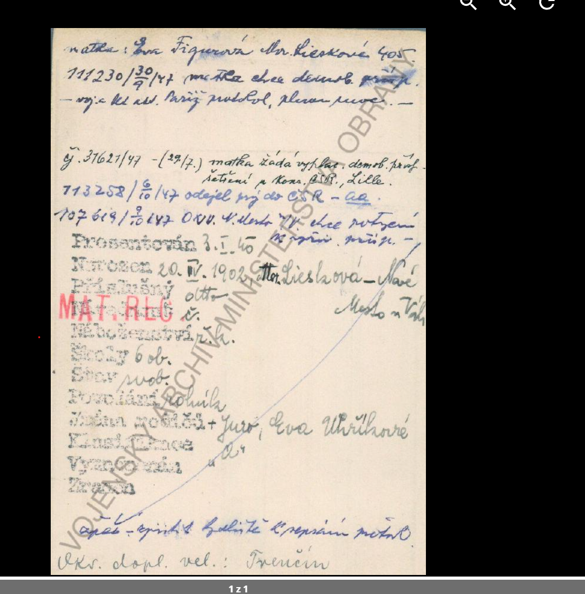
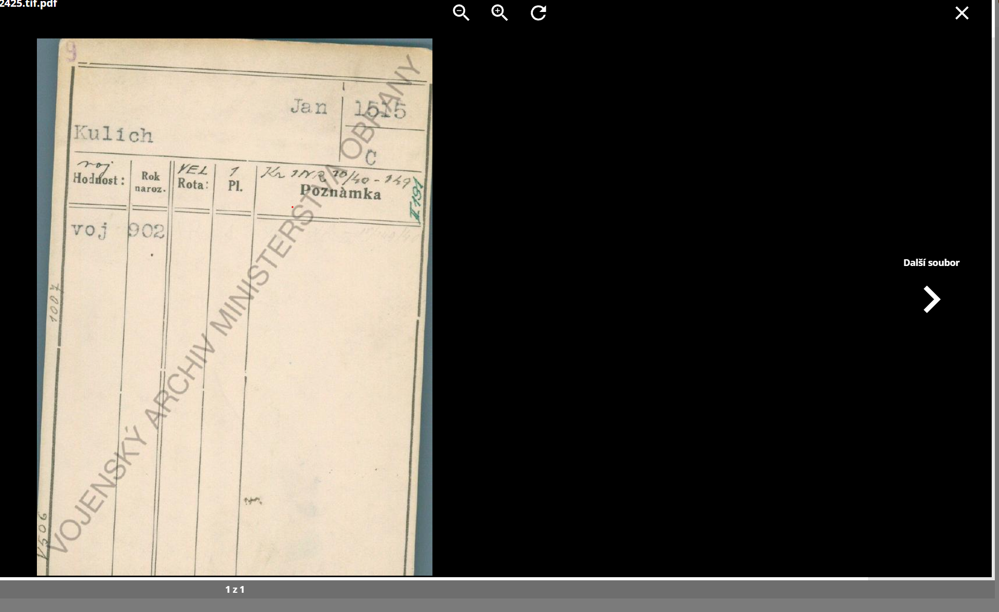
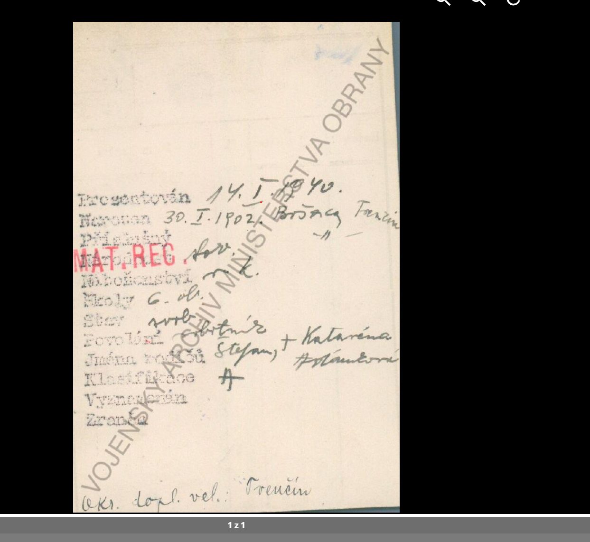
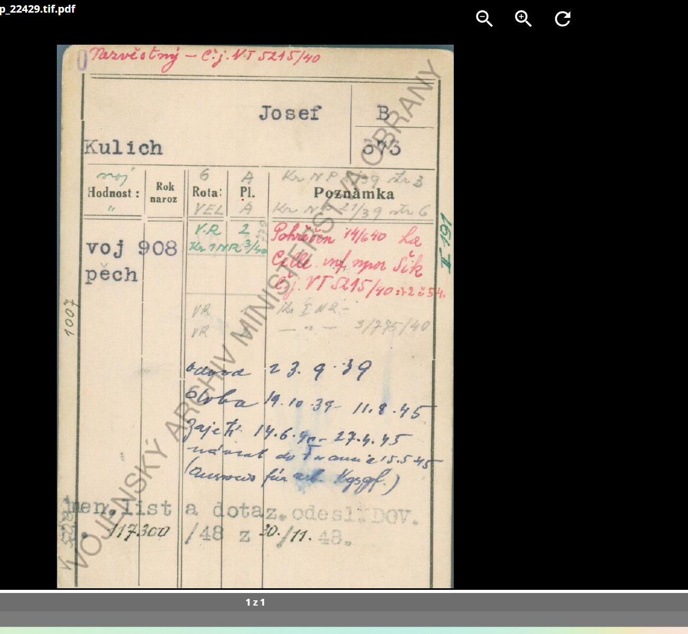

Pracovní přepis · 26. října 2026
Pracovní přepis osmi uživatelem dodaných snímků z vojenské evidence. Zdroj podle vodoznaku: Vojenský archiv Ministerstva obrany; přesný fond, signatura a odkazy nebyly dodány. Sedm různých obrazů: pět líců a dva ruby. Snímky 7 a 8 jsou totožné (ověřeno SHA-256). Značení: (?) = nejisté čtení; […] = vysvětlení nebo nečitelná část; † = křížek u osoby v originálu. Zkratky a čísla vojenských rozkazů nejsou svévolně doplňovány. Uvádím nejlépe čitelný přepis včetně nejistot, nikoli úředně ověřený opis. Z nevyplněné rubriky nevyvozuji, že se událost nestala. Evidenční roky 902/907/908 čtu jako 1902/1907/1908. Přesné přiřazení rubů k lícům není z těchto screenshotů prokázané. Zejména rub č. 4 nemůže být bez vysvětlení připojen Františkovi narozenému 1907: uvádí narození 1902. Dva ruby mají odlišná data i rodiče. Hlášení nezvěstnosti je odlišné od dokladu úmrtí.
Celý přepis v Markdownu · Strukturovaný soupis

[Horní označení] 2 [přepsáno], X. 5. (?) Kulich Bohumil. F / 3197. Hodnost: voj.; pozdější vpisky „voj.“ a „des.“ [desátník]. Rok naroz.: 902 [tj. 1902]. [Červeně nad tabulkou] angl. č. 787023 (?) Rota / Pl.: LET / SK; Lsk; později PR / NT [zkratky dle snímku, část nejistá]. [Poznámky / administrativní odkazy] Kr. TNR 26/40 – 13 (?) Kr. T… 26/40 [slabý přepsaný řádek]. Propuštěn z RAF dne 6/4 43. BNT 64/43 (?) Kr. NT 66/43 – Kr. 6/43 (?) Sup.: 28. 4. 1943. Neschopen dle S-I-1, 80, 82 „C“ [přesný zápis klasifikačního kódu ověřit]. Propuštěn z brann. moci dne 9. 7. 1943. 15 £ vyplaceno. BNT 120/43; Kr. NT 40/43 (?) [Modře dole] Hranice [slovo nejisté] 17. II. 39 [den/měsíc nejisté] do Rumunska. Přihláška v Bukurešti 1. 3. 40 [datum předběžně]. Služba 2. 7. 40 – 9. 7. 43. No [nebo „pro“?] mj. Č. [nejasná zkratka]. [Zeleně dole] Kmen. doklady odeslány VŠÚ. (?) čj. 1900 – [přeškrtnuté číslo]/48; 15. 5. [rok nejasný]. Reg. voj. inval. v Hradci Král. [předběžné čtení]. [Vpisky při okrajích] 1006; V 506; I 101 (?) a další slabé evidenční značky.
Karta dokládá vazbu na RAF a pozdější propuštění z branné moci. Přesné narození, rodiště a rodiče na tomto líci nejsou. RAF zde není dokladem funkce pilota ani konkrétní perutě. Lékařský kód přepisuji, neurčuji z něj diagnózu.

[Horní označení] 5.
Kulich František. H / 42.
Hodnost: voj.; později svob.
Dr. 13. T. Br. 63/45. (?)
Rok naroz.: 907 [tj. 1907].
Rota / Pl. [po sobě vepsané údaje]: 8 / A; TNR / SPO; KE / „; [prázdné] / SPO.
[Poznámky / odkazy]
Kr. NP 26/39 (?)
Kr. TNR 2/40 – 66 (?)
Kr. TDR 4/40 – 175 (?)
Kr. NT 2/40 – 209 (?)
[Slabé další řádky] Kr. NT 6/42 (?); Brig. R. 186/42 – Kr. NT 14/42 (?); Kr. 76/43 (?).
[Razítko a datum] Odesel do pole: 1/9. 1944 [razítko bez zřetelné diakritiky].
[Další změny zařazení]
4 / [P III?]; Brig. 59/45; Kr. 22/45 (?)
1–13. T. Br.; R. T. S. 1/45; Kr. 33/45 (?)
Demobilisován dne 15. 8. 45.
Dr. 13. T. Br. 46/45. (?)
[Modře dole]
Odvod: 16. 11. 1939 (?) [rok i měsíc přepisované, datum ověřit].
Služba 20. 11. 39 (?) – 18. 5. 45.
– 15. 8. 45 [další vepsaný konec služby].
[Červeně při spodním okraji] pay-book č. 2527 (?)
[Okrajové evidence] 1006; V 506; I 101 (?)Nejpevnější data: narození 1907, odchod do pole 1. 9. 1944 a demobilizace 15. 8. 1945. Rukopisné údaje o odvodu a začátku služby jsou méně zřetelné. Dodané ruby s narozením 1902 se k tomuto líci nepřiřazují.

[Horní označení] 10. Nezvěstný – čj. NT 5225/40. Kulich Jan. H / 849 [číslo předběžně čteno]. Hodnost: voj. [opakované drobné vpisky „voj.“ / uvozovky]. Rok naroz.: 902 [tj. 1902]. Rota / Pl.: 2 / 1; 10 / 1; později opět 2 / 1 [slabý řádek]. [Evidenční odkazy] Kr. INR – 1/40 – 37 (?); Kr. TNR 7/40 – 250 (?); Kr. INR – 1/37/40 (?) a opakované „7/250/40“ [slabé, ověřit]. [Červeně] Ztratil se při ústupu roty z obranného postav. dne 18/6 40 [následuje nejasná poznámka „sb. 19 č. 267“?]. čj. N. T. 5225/40. [Červeně dole] Inf. por. Růžička. des. Pokr Otto. [příjmení nejisté; nikoli ověřený přepis jména]. [Okrajové evidence] 1007; V 506; I 101 (?)
Zápis je hlášením o nezvěstnosti po ústupu dne 18. 6. 1940. Neobsahuje ověřené úmrtí. U tohoto Jana chybí na líci přesný den narození a rodiče; rub nelze z pořadí příloh bezpečně určit.

[Modře nahoře] matka: Eva Figurová (?) Mor. Lieskové 405 [předběžné čtení jména a adresy]. 111230 / 30/9 /47 (?) matka chce demob. [další slovo přepsané/nečitelné]. – voj. se kl. [nejasná zkratka] Paříž …, … [zbytek věty nelze spolehlivě přečíst]. [Další korespondence] čj. 31621/47 – (29/7.) matka žádá výpl. demob. [dále nejasné: „… šetření u …“]. … Čs. … Lille. [část názvu úřadu nečitelná]. 113258 / 6/10 /47 odjel prý do ČSR – … [poslední zkratka nejistá]. 107629 / 9/10 /47 OVV. V. Mesto … chce potvrzení … vojín. … [zbytek nejistý]. [Osobní údaje] Prezentován: 3. I. 40 [předběžně]. Narozen: 20. IV. 1902, Mor. Lieskova – Nové Mesto n. Váhu [konec místa při pravém okraji neúplný]. Příslušný: dtto [tj. totéž, předběžně čteno]. [Národnost / příslušná překrytá rubrika]: č. (?) Náb. příslušnost: ř. k. Školy: 6 ob. Stav: svob. Povolání: rolník. Jména rodičů: † Jur. [Juraj/Jiří?], Eva Uhříková (?) Klasifikace: A (?) [drobný zápis/uvozovky při šipce, slabě čitelné]. Vyznamenán: [nevyplněno / bez bezpečného zápisu]. Zraněn: [nevyplněno / bez bezpečného zápisu]. [Šipka a modrý vpis dole] … zjistit bydliště k vypsání … [text není dostatečně čitelný]. Okr. dopl. vel.: Trenčín. [Razítko přes levou část] MAT. REG.
Jde o rub s datem 20. dubna 1902 a rodištěm Moravské Lieskové, s otcem předběžně Jur./Jurajem a matkou Evou. Horní Eva Figurová může znamenat pozdější příjmení matky, ale sňatek ani totožnost příjmení tím nejsou prokázány. Dopisy z roku 1947 jsou žádosti a informace o hledání či demobilizačních náležitostech, nikoli samy doklad úmrtí. Jméno vojáka na rubu není: k Janovi H 849 ani C 1515 jej zatím pevně nepřiřazuji.

[Horní označení] 9. Kulich Jan. 1515 / C [poloha písmena podle karty]. Hodnost: voj. [dopsáno i nad předtištěný nadpis]. Rok naroz.: 902 [tj. 1902]. Rota / Pl.: VEL / 1. Poznámka: Kr. INR 10/40 – 149 (?) [zkratka a číslo rozkazu předběžně]. [Zbytek lícové plochy] bez dalšího bezpečně čitelného životopisného zápisu. [Okrajové evidence] 1007; V 506; I 101 (?) [Část názvu souboru ve snímku prohlížeče] …2425.tif.pdf.
Další karta Jana Kulicha s rokem 1902 a odlišným evidenčním označením. Bez přesného narození nelze ze samotného líce bezpečně rozhodnout, ke kterému rubu patří ani zda jde o samostatnou osobu oproti druhému líci. Pro práci obě karty vedeme odděleně.

Prezentován: 14. I. 1940 [rok přepisovaný; předběžné čtení]. Narozen: 30. I. 1902, Bošáca, Trenčín [druhý místní údaj u pravého okraje useknutý: „Trenčín…“]. Příslušný: „ [uvozovky / opakování místa, následně pomlčka]. [Národnost / příslušná překrytá rubrika]: slov. (?) Náb. příslušnost: ř. k. Školy: 6 tř. (?) Stav: svob. Povolání: …tník [snad „dělník“ nebo „roľník“, nelze rozhodnout]. Jména rodičů: Štefan, † Katarína Pol…ová [příjmení nejisté, snad Polančárová/Polandrová]. Klasifikace: A. Vyznamenán: [nevyplněno / bez bezpečného zápisu]. Zraněn: [nevyplněno / bez bezpečného zápisu]. Okr. dopl. vel.: Trenčín. [Razítko] MAT. REG.
Tento rub má jiné narození i rodiče než rub č. 4, proto popisují dvě různé osoby, je-li čtení dat správné. Samotný rub neobsahuje jméno vojáka. Pořadí příloh není dostatečný důkaz spojení s Janem C 1515; nutná je původní návaznost líc/rub v archivu.

[Horní označení] 10. Nezvěstný – čj. NT 5215/40. Kulich Josef. B / 573 [číslo předběžně čteno]. Hodnost: voj.; pěch [pěchota]. Rok naroz.: 908 [tj. 1908]. Rota / Pl. [měněné zařazení]: 6 / A; VEL / A; V. R. / 2; opakované V. R. [Poznámky / odkazy] Kr. NP …/39; … 3 (?) Kr. NP 27/39; … 6 (?) Kr. INR 3/40 (?) [zelený řádek v části tabulky]. [Červeně] Pohřešen 14/6 40 les Celle, inf. npor. Šik [místo a jméno předběžně]. čj. NT 5215/40; s. 2 č. 54. (?) [Slabé další řádky] Kr. INR …; – „ – 3/275/40 (?) [Modře] Odvod 23. 9. 39. Služba 19. 10. 39 – 11. 8. 45. Zajetí 14. 6. 40 – 27. 4. 45. návrat do Francie 25. 5. 45. (… für … [nečitelné, možná další francouzský či německý údaj]). [Razítko a čj. dole] Kmen. list a dotaz. odesl. DOV. 117300 /48 z 20./11. 48. (?) [Okrajové evidence] 1007; V 506; I 101 (?) [Část názvu souboru v prohlížeči] …p_22429.tif.pdf.
Pozdější vpis zachycuje zajetí od 14. 6. 1940 do 27. 4. 1945 a návrat do Francie 25. 5. 1945. Starší označení „nezvěstný“ se nesmí převést na tvrzení, že padl. Snímek 8 je se snímkem 7 byte po bytu totožný; není to druhý Josef ani další nezávislý doklad.
## Příbuznost s Dominikem Z těchto snímků zatím žádnou příbuznost neprokazujeme. Přímá kulichovská větev má podle dosavadních podkladů nedořešené rodiče Václava Kulicha (*asi 1936, Ledčice?). Vojenské líce zde často nemají rodiště ani rodiče; dvě rubové strany směřují k Trenčínu. Podobné příjmení samo není spojení. Narození 1902–1908 jsou generačně slučitelná s některými staršími příbuznými, ale žádný z mužů nebyl proto přidán do hlavního stromu. Nejdůležitější další podklady: přímé odkazy na původní karty pro potvrzení líc/rub, zadní strany Bohumila, Františka a Josefa s rodiči a rodištěm; vlastní rodný list Václava Kulicha a údaje o jeho rodičích. Při dalším čtení ověřit zejména osobní čísla H 849 a B 573, příjmení matek, vojenské odkazy, odvod Františka a Bohumilovo datum odchodu přes hranice. ## Základní zkratky v tomto přepisu voj. = vojín; svob. = svobodník v rubrice hodnosti, svobodný v rubrice rodinného stavu; des. = desátník; pěch. = pěchota; čj. = číslo jednací; ř. k. = římskokatolické vyznání; 6 ob. = pravděpodobně šest tříd obecné školy; † u jména = osoba označená jako zemřelá. Přesné významy jednotlivých útvarových zkratek a klasifikací z těchto screenshotů neurčuji.